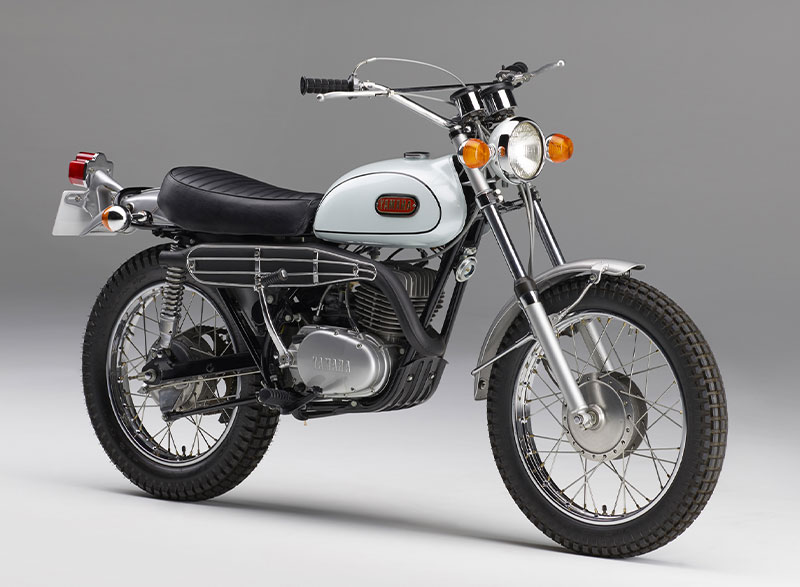
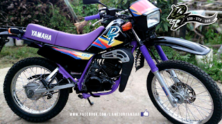
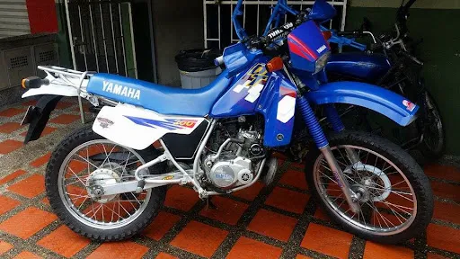

Después de desarrollar el concepto de motocicleta todoterreno de uso dual, Yamaha continuó trabajando en modelos capaces de ofrecer un buen rendimiento tanto en carretera como fuera del asfalto.
La familia DT fue evolucionando con el paso de los años. Las nuevas generaciones incorporaron cambios en sus motores, suspensiones, frenos y diseños, adaptándose a las necesidades de los motociclistas.
Estas motocicletas estaban pensadas para quienes querían algo más que un vehículo para desplazarse por la ciudad: buscaban una máquina con la que también pudieran explorar caminos rurales, montañas y senderos.
Una de las características mas importantes de la linea DT fue su versatilidad. Su configuración todoterreno permitia afrontar superficies irregulares, mientras que su equipamiento de carretera facilitaba los desplazamientos cotidianos.

La filosofia de la Yamaha DT consistia en combinar la libertad del todoterreno con la posibilidad de circular por carretera.
Entre los modelos mas conocidos de esta familia se encuentra la Yamaha DT 125, que tuvo distintas generaciones y configuraciones según el mercado y el año.
Muchas de sus verciones utilizaron motores de dos tiempos, una caracteristica apreciada por su respuesta, su construccion relativamente sencilla y su caracter deportivo.
Su combinacion de tamaño, comportamiento todoterreno y capacidad para circular por carretera hizo que la DT 125 se ganara un lugar especial entre los aficionados a las motocicletas de enduro y trail.

La historia de la DT demuestra como una idea diferente puede convertirse en una familia de motocicletas reconocida. Su enfoque práctico y aventurero contribuyo a popularizar el concepto de una moto capaz de desenvolverse en distintos terrenos.
Mas alla de sus características tecnicas la Yamaha DT representa para muchos motociclistas una combinacion de libertad, aventura y pasion por las dos ruedas.
La DT no fue solamente una motocicleta para recorrer caminos: tambien se convirtio en un simbolo de exploracion y espiritu aventurero.